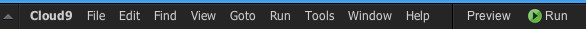

Run an application
On Hosted and SSH workspaces, Cloud9 provides two ways to run your application:
- Using the Run panel with built-in Runners for many languages
- From a Terminal
Method 1: Use the Run panel
First, open the file you want to run.
Next, click on the Run button in the top menu bar in the IDE.

The Run button acts as a sort of shortcut to the Run panel, which will appear by default in the bottom of the IDE when you run a file. This automatically runs the currently active file, and it will guess which Runner to use based on the extension of the file.
When you're ready to stop your app, click on the Stop Button button in the menu bar at any time, or from the Run panel below.

On the Run panel, you'll notice a few more options you can set. Filling these textboxes out creates a Run Configuration.
- Name: the name of your run scenario
- Command: the command you want to run; this is usually the location of your running file in your project, but it also allows you to provide any additional command line arguments you want to pass to your app
- Runner: defines how you want your code to be run. A wide range of Runners is available by default, from Apache to Node.js and Shell scripts, and you can define your own.
- CWD: Set the current working directory to start from
- Environment: Set environment variables
Tip:
If you can't find the Runner you need from the default set, you can create your own custom Runner.For some default runners like Node.js, it's an option to Run in debug mode, which indicates that you want to run the current code through the debugger. This will reveal (or collapse) the debugging tools panel described in Running and Debugging your code.
Method 2: From the Terminal
The built-in Terminal provides access to all underlying system commands, including your Runners such as Node.js.
Simply open up a Terminal from the "+" sign, or use CMD+T (Mac) / Control+T (Windows), and then execute the command you need to run your app, e.g. node server.js.
(Pre-)View your application
To find out where your application is running you can do two things:
- Use the Preview button on the top to preview one of your files. The URL in the browser bar in the Preview can also be used in any browser tab/window.
- Use the Share button on the top to figure out the URLs of running Application and the Preview. The Editor URL is only used to share your entire Cloud9 workspace to collaborate on code.